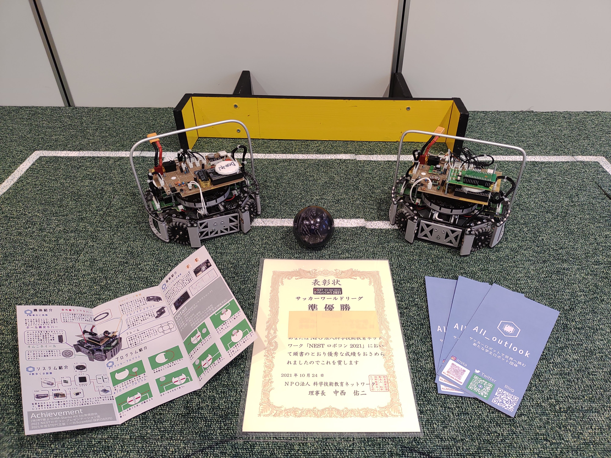
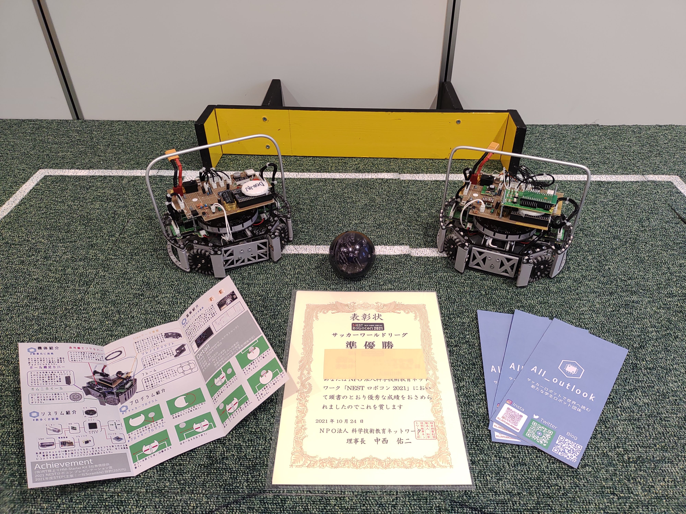
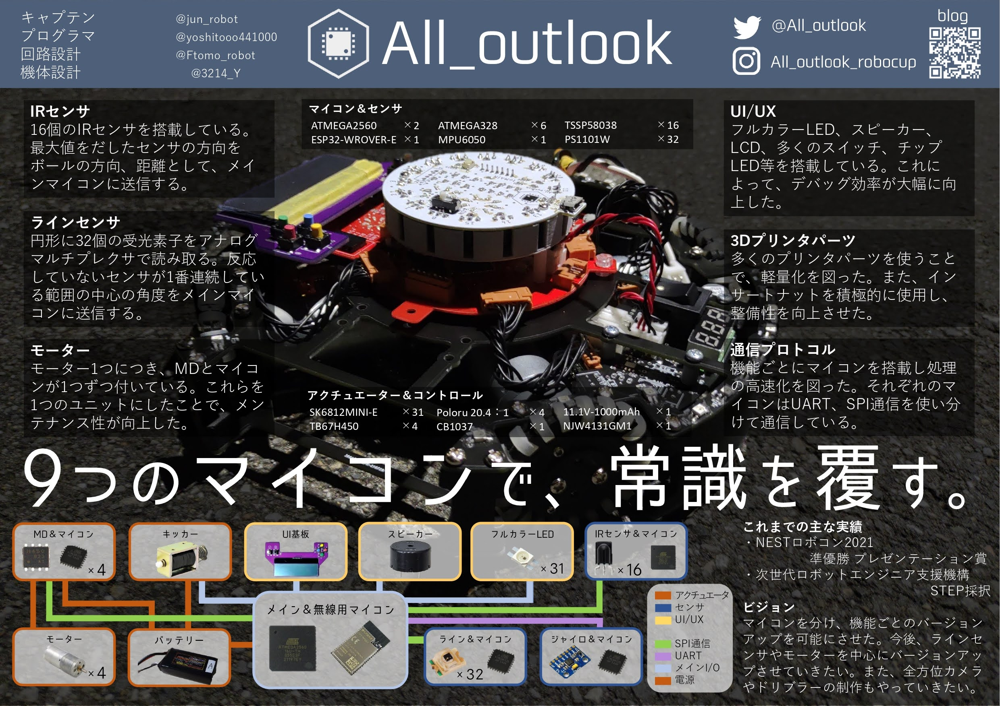

Nestロボコン2021
準優勝 & プレゼンテーション賞
2021/10/24実施
Outrage1.1×2で出場
1勝1敗
このチームとして初の大会出場だった。 これより前の夏休みにBiwakoOpenなどにも出場予定だったがコロナで中止。 Nestも本来は、夏休みの最後にやる予定だったが延期してこの日になった。 2人しか会場に行けなかったためプラグラム担当のJunとYoshitoで参戦した。
これまでの実績を御覧ください！！
準優勝 & プレゼンテーション賞
2021/10/24実施
Outrage1.1×2で出場
1勝1敗
このチームとして初の大会出場だった。 これより前の夏休みにBiwakoOpenなどにも出場予定だったがコロナで中止。 Nestも本来は、夏休みの最後にやる予定だったが延期してこの日になった。 2人しか会場に行けなかったためプラグラム担当のJunとYoshitoで参戦した。
優勝 & プレゼンテーション賞
2021/11/14実施
Outrage1.2×2で出場
1勝
Outrage2×2で出場したかったがマイコン間通信が間に合わず、惜しくもOutrage1で出ることになった。